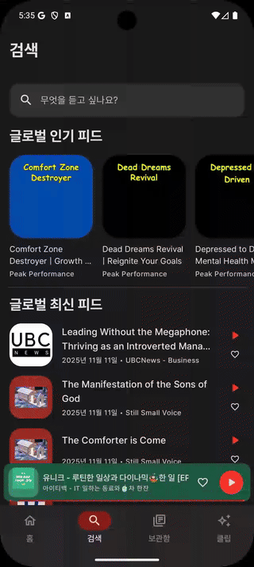

Expandable search with trending, recent, and full-text search results
The search screen uses an EpisodiveSearchBar that expands on tap. The collapsed state shows trending podcasts and recent episodes. The expanded state shows recent search history and live search results with a 500ms debounce.

The search bar is compact. Below it, two browse sections are visible:
PodcastItem list from GetTrendingPodcastsUseCase(max=10)EpisodeItem list from GetRecentEpisodesUseCase(max=6)When the search bar is tapped, it expands to full width. The content switches to:
PodcastSimpleItem rows, driven by SearchUseCase with 500ms debounce| Field | Type | Description |
|---|---|---|
searchQuery | String | Current text in the search bar |
searchHistory | List<String> | Reserved for future search history |
searchResult | SearchResult | Combined podcast + episode results from FTS |
recentSearches | List<String> | Recently searched queries (max 100) |
categories | List<Category> | All category entries for quick browse |
recentEpisodes | List<Episode> | Recent episodes for collapsed view |
trendingPodcasts | List<Podcast> | Trending podcasts for collapsed view |
The Search screen is one of the 4 bottom navigation destinations. Clicking a podcast navigates to Podcast Detail. Clicking a category navigates to Channel Detail. Clicking an episode plays it directly via PlayEpisodeUseCase without navigation.